Lecture 16 Workbook
This workbook holds the notes and the questions for Lecture 16. Each section starts with notes that explain everything on the slides, and a little more. Answer the questions as we discuss the slides. For a multiple-choice question, circle one letter. Section 7 is the animal shelter problem, to do at home as practice. Section 9 has two complete programs to write after class. By the end, you should be able to:
- find the fields and methods that two classes repeat, and move them into a superclass;
- write a subclass with
extends, and say which members it inherits; - write a subclass constructor that calls
super(...)as its first statement; - use a public getter when a subclass needs a private field of its superclass;
- use the is-a test to choose between inheritance and a field; and
- write complete programs with a superclass, a subclass and a demo.
1. Duplication
A notice board
A campus notice board shows notices that students post. A text notice has an author and a message, such as ada's "Study group at 4pm." An event notice has an author, a title and a day of the month, such as bo's "Hackathon" on day 12. Anyone who likes a notice can pin it, and every notice keeps count of its pins. We write one class for each kind of notice.
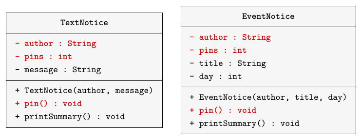
The members in red appear in both classes. Here are the two classes.
public class TextNotice
{
private String author;
private int pins;
private String message;
public TextNotice(String author,
String message)
{
this.author = author;
this.message = message;
pins = 0;
}
public void pin()
{
pins = pins + 1;
}
public void printSummary()
{
System.out.println(author + ": " + message);
System.out.println(" pins: " + pins);
}
}public class EventNotice
{
private String author;
private int pins;
private String title;
private int day;
public EventNotice(String author,
String title, int day)
{
this.author = author;
this.title = title;
this.day = day;
pins = 0;
}
public void pin()
{
pins = pins + 1;
}
public void printSummary()
{
System.out.println(author + ": " + title + ", day " + day);
System.out.println(" pins: " + pins);
}
}The board
The board keeps one list for each kind of notice, with one add method for each list. Its show() method prints every text notice, then every event notice.
import java.util.ArrayList;
public class NoticeBoard
{
private ArrayList<TextNotice> textNotices;
private ArrayList<EventNotice> eventNotices;
public NoticeBoard()
{
textNotices = new ArrayList<>();
eventNotices = new ArrayList<>();
}
public void addTextNotice(TextNotice notice)
{
textNotices.add(notice);
}
public void addEventNotice(EventNotice notice)
{
eventNotices.add(notice);
}
public void show()
{
for(TextNotice notice : textNotices) {
notice.printSummary();
}
for(EventNotice notice : eventNotices) {
notice.printSummary();
}
}
}The demo makes three notices, pins ada's notice twice and bo's notice once, adds the notices to a board and shows it.
public class NoticeBoardDemo
{
public static void main(String[] args)
{
TextNotice first = new TextNotice("ada", "Study group at 4pm.");
EventNotice second = new EventNotice("bo", "Hackathon", 12);
TextNotice third = new TextNotice("chen", "Lost calculator.");
first.pin();
first.pin();
second.pin();
NoticeBoard board = new NoticeBoard();
board.addTextNotice(first);
board.addEventNotice(second);
board.addTextNotice(third);
board.show();
}
}ada: Study group at 4pm. pins: 2 chen: Lost calculator. pins: 0 bo: Hackathon, day 12 pins: 1
Notice that chen's notice prints before bo's, although bo's was added first. The board prints all the text notices first, because they are in a list of their own.
The same code twice
The two classes repeat the author and pins fields, the lines that set them, and the whole pin() method. The problem with this approach is that every change to the shared part must be made twice. Suppose a notice may have at most ten pins: we must edit pin() in both classes, and if we forget one, the two kinds of notice behave differently. A bug in the shared code must also be fixed twice. A third kind of notice would copy the same lines a third time. We want to write the shared code once.
Practice
1.1 This demo uses the board above. Write what it prints, and say why the notices do not print in the order they were added.
NoticeBoard board = new NoticeBoard();
board.addEventNotice(new EventNotice("fay", "Chess club", 3));
board.addTextNotice(new TextNotice("eli", "Room 2 is free."));
board.addEventNotice(new EventNotice("gil", "Git basics", 5));
board.show();| Line | Printed |
|---|---|
| 1 | |
| 2 | |
| 3 | |
| 4 | |
| 5 | |
| 6 |
Why do the notices not print in the order they were added?
1.2 A student fixes a bug in pin() in TextNotice but forgets to fix EventNotice. What happens?
- The program compiles, and event notices still count pins the old way.
- The program does not compile, because the two
pin()methods now differ. EventNoticeuses the fixedpin()fromTextNotice, because the methods have the same name.- The program stops with an error the first time an event notice is pinned.
1.3 Which member of TextNotice is exactly the same code as a member of EventNotice?
printSummary()- the constructor
pin()- the field
message
1.4 Which change would have to be made twice, once in each class?
- Print the message in capital letters.
- Add a room to every event notice.
- Show the event notices before the text notices.
- Count each pin as two pins.
2. Superclass
One class above two
We move the shared part into a new class, Notice. It holds what every notice has: an author, a pin count and the pin() method. Notice is the superclass. TextNotice and EventNotice become subclasses of Notice: each keeps only the parts that are its own. In a class diagram, the arrow with a hollow triangle points from a subclass to its superclass.
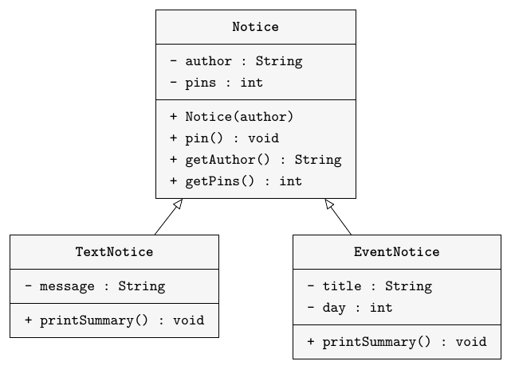
The Notice class
Notice is an ordinary class. Its constructor sets the author and starts the pin count at 0. The two getters let other classes read the private fields; we need them in Section 4.
public class Notice
{
private String author;
private int pins;
public Notice(String author)
{
this.author = author;
pins = 0;
}
public void pin()
{
pins = pins + 1;
}
public String getAuthor()
{
return author;
}
public int getPins()
{
return pins;
}
}Subclasses
The words extends Notice in a class header make the class a subclass of Notice. Each subclass now declares only its own fields. The pin() method is gone from both, because it is in Notice. The constructors call super(author), which Section 3 explains, and the printSummary() methods use getAuthor() and getPins(), which Section 4 explains.
public class TextNotice extends Notice
{
private String message;
public TextNotice(String author,
String message)
{
super(author);
this.message = message;
}
public void printSummary()
{
System.out.println(getAuthor() + ": " + message);
System.out.println(" pins: " + getPins());
}
}public class EventNotice extends Notice
{
private String title;
private int day;
public EventNotice(String author,
String title, int day)
{
super(author);
this.title = title;
this.day = day;
}
public void printSummary()
{
System.out.println(getAuthor() + ": " + title + ", day " + day);
System.out.println(" pins: " + getPins());
}
}The board and the demo do not change, and the demo prints exactly the same six lines as before.
One object, two parts
new TextNotice(...) makes one object, not two. That object has the fields declared in Notice and the field declared in TextNotice. We can picture it as one object with a Notice part and a TextNotice part.
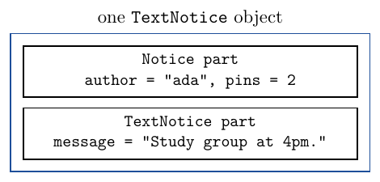
Inherited methods
The methods pin(), getAuthor() and getPins() are written in Notice, but a TextNotice object has them too. This is inheritance: a subclass gets the public methods of its superclass, and we call them with the usual dot.
TextNotice note = new TextNotice("ada", "Study group at 4pm.");
note.pin();
System.out.println(note.getAuthor());
System.out.println(note.getPins());ada 1
Inheritance goes one way only. A subclass gets the methods of its superclass, but the superclass does not get the methods of its subclasses. A Notice object has no printSummary() method, because that method is written in the subclasses.
Practice
2.1 Use the classes in this section, with note and plain made as below. Does each call compile? Write yes or no.
TextNotice note = new TextNotice("ada", "Study group at 4pm.");
Notice plain = new Notice("eli");| Call | Compiles? |
|---|---|
note.pin() | |
note.getPins() | |
note.printSummary() | |
plain.getAuthor() | |
plain.printSummary() |
2.2 What does this code print? Write one printed line on each answer line.
EventNotice e = new EventNotice("fay", "Chess club", 3);
e.pin();
e.pin();
System.out.println(e.getAuthor());
System.out.println(e.getPins());
e.printSummary();| Line | Printed |
|---|---|
| 1 | |
| 2 | |
| 3 | |
| 4 |
2.3 The object e from 2.2 has four fields. For each field, give the class that declares it.
| Field | Declared in |
|---|---|
author | |
pins | |
title | |
day |
2.4 How many objects does new TextNotice("ada", "Study group at 4pm.") create?
- Two objects: a
Noticeand aTextNoticethat refers to it - One object, with a
Noticepart and aTextNoticepart - One
Noticeobject; theTextNoticeclass only adds methods to it - One
TextNoticeobject, with noauthororpinsfields
2.5 What does this code print?
TextNotice a = new TextNotice("ada", "Study group at 4pm.");
TextNotice b = new TextNotice("bo", "Room 2 is free.");
a.pin();
a.pin();
System.out.println(a.getPins() + " " + b.getPins());2 02 20 0- Nothing: it does not compile, because
TextNoticehas nogetPins().
2.6 A public method unpin() is added to Notice, and nothing else changes. Which objects can call it?
- Only
Noticeobjects, untilunpin()is copied into the subclasses - Only
TextNoticeandEventNoticeobjects - None, until each subclass declares its own
unpin() Notice,TextNoticeandEventNoticeobjects
2.7 TextNotice and EventNotice both extend Notice. Which statement is true?
- A
TextNoticeobject also hastitleandday, because both classes extendNotice. EventNoticeinheritsmessagefromTextNotice.- A
TextNoticeobject hasauthor,pinsandmessage, but notitleorday. - A
TextNoticeobject has onlymessage;authorandpinsstay in aNoticeobject.
3. Constructors
Constructors and inheritance
A new text notice needs an author, a pin count of 0 and a message. The Notice constructor sets the author and the pins, and the TextNotice constructor sets the message. A subclass inherits the methods of its superclass, but not its constructors: each class writes its own. So the TextNotice constructor must ask the Notice constructor to set up the Notice part.
Calling the superclass
The statement super(author); calls the constructor of the superclass and passes the author to it. It must be the first statement in the subclass constructor. After it, the constructor sets the subclass's own fields.
// Constructor from TextNotice:
public TextNotice(String author,
String message)
{
super(author);
this.message = message;
}The arguments of super(...) must match the parameters of a superclass constructor, just as the arguments of new Notice(...) would. Notice(String author) has one String parameter, so we pass one String.
Construction order
Consider new EventNotice("bo", "Hackathon", 12). Java first runs super("bo"), so the Notice constructor sets the author to "bo" and the pins to 0. Then the rest of the EventNotice constructor sets the title and the day. The superclass part is always set up first, then the subclass part.
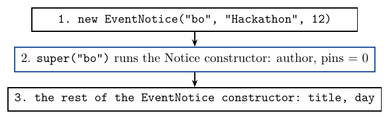
The demo then calls second.pin(), so bo's notice has 1 pin.
Leaving out super
What happens if a subclass constructor has no super(...) call? Java then adds super() with no arguments. Notice has no constructor without parameters, so this constructor does not compile.
public TextNotice(String author, String message)
{
this.message = message;
}error: constructor Notice in class Notice cannot be applied to given types; required: String found: no arguments reason: actual and formal argument lists differ in length
The fix is to write super(author); as the first line. If we write it later in the constructor, for example after this.message = message;, the compiler stops with a different error:
error: call to super must be first statement in constructor
Practice
3.1 new TextNotice("chen", "Lost calculator.") runs these four statements. Put them in the order they run.
| Statement | Written in | Runs |
|---|---|---|
this.message = message; | TextNotice | |
pins = 0; | Notice | |
super(author); | TextNotice | |
this.author = author; | Notice |
3.2 A workshop is an event notice with a room. A student writes this class, and it does not compile. Explain why, using the constructors that EventNotice has.
public class Workshop extends EventNotice
{
private String room;
public Workshop(String author, String title,
int day, String room)
{
this.room = room;
}
}3.3 Write a correct constructor for Workshop. It sets up the EventNotice part with the author, the title and the day, then sets the room.
Write the constructor in the class below. The box includes Notice and EventNotice, makes gil's workshop in room EN-2036, pins it and prints it.
3.4 Why does the TextNotice constructor call super(author) instead of setting author itself?
- Java copies the
Noticeconstructor intoTextNotice, andsuper(author)calls that copy. authoris private inNotice, and theNoticeconstructor sets up theNoticepart.super(author)makes a separateNoticeobject that stores the author.- Without
super(author), the author would be set twice.
3.5 Which expression compiles?
new TextNotice("ada")new TextNotice()new Notice()new TextNotice("ada", "Study group at 4pm.")
3.6 This constructor leaves out super(...). What happens?
public TextNotice(String author, String message)
{
this.message = message;
}- It does not compile: Java adds
super(), andNoticehas no constructor without parameters. - It compiles, and the author of each new notice is
null. - It compiles, and Java passes
authortoNoticebecause the names match. - It compiles, but the program stops when a
TextNoticeis made.
3.7 Workshop extends EventNotice, and EventNotice extends Notice. When new Workshop(...) runs, in which order are the parts of the object set up?
- The
Workshoppart, then theEventNoticepart, then theNoticepart - The
EventNoticepart, then theNoticepart, then theWorkshoppart - The
Noticepart, then theEventNoticepart, then theWorkshoppart - Only the
Workshoppart; the other parts are copied from existing objects
4. Private fields
Private access
A TextNotice object has an author, so it may seem that printSummary() can use the field author directly. It cannot.
// In TextNotice:
public void printSummary()
{
System.out.println(author + ": " + message);
}error: author has private access in Notice
The field author is private in Notice. Only code written inside Notice can use a private field by its name, and this holds for subclasses too. The object has the field, but the code of TextNotice cannot name it.
The getter
The public method getAuthor() is inherited, so the subclass can call it, and the getter reads the private field from inside Notice. In the same way, getPins() reads the pin count.
// In TextNotice:
public void printSummary()
{
System.out.println(getAuthor() + ": " + message);
System.out.println(" pins: " + getPins());
}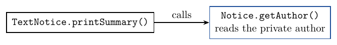
Java also has protected access, which lets subclasses use a field directly. It comes in Chapter 13. Until then, a getter keeps the field private and still lets the subclass read it.
One copy
The shared code now lives only in Notice. A new pin rule is a change in one method in one class, and both kinds of notice follow it. The output of the demo is exactly the same as before the change: moving code into a superclass changes how the program is written, not what it does.
Practice
4.1 A student writes printSummary() in EventNotice like this. For each name it uses, say whether the name compiles here or causes an error.
public void printSummary()
{
System.out.println(author + ": " + title + ", day " + day);
System.out.println(" pins: " + pins);
}| Name | Compiles or error? |
|---|---|
author | |
title | |
day | |
pins |
4.2 Add a method printShort() to TextNotice. It prints the author and the pin count on one line, for example ada (2 pins) for ada's notice after two pins.
Add the method to the class below. The box includes Notice, pins ada's notice twice and calls printShort().
4.3 Making author public would also let TextNotice use it. Why is a private field with a public getter the better choice?
4.4 Does a TextNotice object have an author field?
- No: private fields are not inherited, so the object has no author.
- Yes, in its
Noticepart, but only code inNoticecan use the field by name. - Yes, and code in
TextNoticecan use it by name, because it is the same object. - Only if
TextNoticedeclares its ownauthorfield.
4.5 Notice renames its private field author to writer, and changes getAuthor() to return writer. What must change in TextNotice?
- Nothing, because
TextNoticereads the author only throughgetAuthor(). - Every line in
TextNoticethat usesauthor. - The call
super(author)must becomesuper(writer). TextNoticemust declare a field calledwriter.
4.6 To get rid of the private access error, a student adds private String author; to TextNotice and sets it in the constructor after super(author). What is the result?
- It does not compile, because
Noticealready has a field calledauthor. - The new field replaces the one in
Notice, sogetAuthor()returns it. - It compiles, and the duplication between the classes is gone.
- It compiles, but each
TextNoticeobject now holds the author twice.
4.7 Notice has getAuthor() but no setAuthor(). After ada's notice is made, can code in TextNotice or NoticeBoard change its author?
- Yes,
TextNoticecan, because a subclass may assign the private fields it inherits. - Yes, any class can, by assigning a new value to
getAuthor(). - No. Only code in
Noticecan assignauthor, and only its constructor does. - Yes,
NoticeBoardcan, because it keeps the notice in a list.
5. Is-a
The is-a test
Before you write extends, say the sentence "Every X is a Y." "Every event notice is a notice" is true, so EventNotice extends Notice is a good design. "Every notice board is a notice" is false, so the board must not extend Notice, even though both have something to do with notices. Two classes that share a few similar lines are not enough reason for inheritance; the sentence must be true.
Has-a
A notice board has notices. It keeps them in its fields, the two lists. A has-a relationship is written as a field or a list, not with extends. In a class diagram, has-a is a plain line, with no triangle.
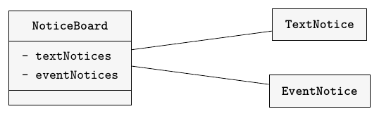
Hierarchies
Classes joined by extends form an inheritance hierarchy. A class can have many subclasses, and a subclass can have subclasses of its own. As a sketch, suppose a workshop is a kind of event notice. Then Workshop extends EventNotice. A workshop is an event notice, and so it is also a notice: a Workshop object has the Notice part, the EventNotice part and its own part. A class can extend only one class.
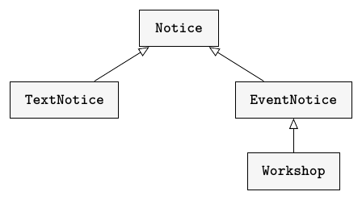
Practice
5.1 For each pair, write is-a or has-a, and say how the code would show it: with extends, or with a field.
| Pair | Is-a or has-a? | In the code |
|---|---|---|
| a car and a vehicle | ||
| a car and an engine | ||
| a playlist and its songs | ||
| a lecturer and a person |
5.2 A student wants the board to have an author, so they write public class NoticeBoard extends TextNotice. Use the is-a test to explain why this is a poor design.
5.3 Which pair passes the is-a test, so that extends fits?
- A bank and a bank account
- A savings account and a bank account
- A bank account and its balance
- A customer and a bank account
5.4 A course keeps a list of the students who take it. How should the code show this?
public class Course extends Studentpublic class Student extends Course- Copy the fields of
StudentintoCourse - A field
private ArrayList<Student> students;inCourse
5.5 Workshop extends EventNotice. It declares only a room field, its constructor and getRoom(). Which methods can be called on a Workshop object?
pin(),getAuthor(),getPins(),printSummary()andgetRoom()- Only
getRoom() getRoom()andprintSummary(), from its direct superclass onlypin(),getAuthor(),getPins()andgetRoom(), but notprintSummary()
5.6 A student writes public class Student extends Course because each student takes a course. The code compiles. What is the right advice?
- Keep
extends: the code compiles, so the design is fine. - Swap the classes:
Course extends Student. - Use a field: a student takes a course, but a student is not a course.
- Keep
extends, and make the fields ofCoursepublic.
6. A new kind
Job notices
The board now needs job notices. Dara posts a job at the Campus Bookstore. A job notice is a notice, so JobNotice extends Notice, and it adds only the employer. The new members are in red.
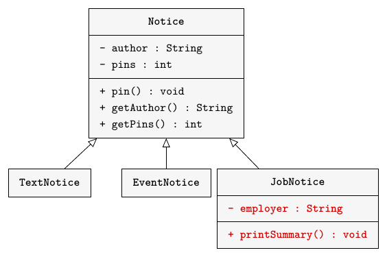
JobNotice has the same parts as the other subclasses: extends, a constructor that calls super(author), and a printSummary() that uses the getters. The methods pin(), getAuthor() and getPins() come from Notice for free.
public class JobNotice extends Notice
{
private String employer;
public JobNotice(String author,
String employer)
{
super(author);
this.employer = employer;
}
public void printSummary()
{
System.out.println(getAuthor() + ": job at " + employer);
System.out.println(" pins: " + getPins());
}
}The board with three kinds
The board needs a third list, a third add method and a third loop in show().
import java.util.ArrayList;
public class NoticeBoard
{
private ArrayList<TextNotice> textNotices;
private ArrayList<EventNotice> eventNotices;
private ArrayList<JobNotice> jobNotices;
public NoticeBoard()
{
textNotices = new ArrayList<>();
eventNotices = new ArrayList<>();
jobNotices = new ArrayList<>();
}
public void addTextNotice(TextNotice notice)
{
textNotices.add(notice);
}
public void addEventNotice(EventNotice notice)
{
eventNotices.add(notice);
}
public void addJobNotice(JobNotice notice)
{
jobNotices.add(notice);
}
public void show()
{
for(TextNotice notice : textNotices) {
notice.printSummary();
}
for(EventNotice notice : eventNotices) {
notice.printSummary();
}
for(JobNotice notice : jobNotices) {
notice.printSummary();
}
}
}The demo makes dara's job notice as a fourth notice and adds it with board.addJobNotice(fourth). The rest of the demo is the same as in Section 1.
ada: Study group at 4pm. pins: 2 chen: Lost calculator. pins: 0 bo: Hackathon, day 12 pins: 1 dara: job at Campus Bookstore pins: 0
What it cost
Notice, TextNotice and EventNotice did not change. The new subclass is 16 lines long. A separate JobNotice without inheritance, with its own author, pins and pin(), would be 23 lines. So each new kind of notice is shorter, and the pin rule stays in one place.
The board did not get shorter. It still needs one list, one add method and one loop for every kind of notice, and it still prints the notices by kind, not in the order they were added. Lecture 17 replaces the three lists with one list that holds every kind of notice.
Practice
6.1 Write a class SaleNotice for a student who sells something. It is a subclass of Notice with a private String item and a private int price in dollars. The constructor takes the author, the item and the price, in that order. For example, new SaleNotice("eli", "a bike", 40), pinned once, prints these two lines:
eli: selling a bike for 40 dollars pins: 1
The box includes Notice. It makes eli's sale of a bike for 40 dollars, pins it once and calls printSummary(), then tries a second sale.
6.2 Suppose the board must also show sale notices. Write the new field, the line to add to the constructor, the new add method and the new loop in show().
6.3 The rule changes: a notice may have at most ten pins. With the superclass, which class or classes must change? With three separate classes and no superclass, which must change?
6.4 To add JobNotice, which existing class had to change?
Notice, to add the employerNoticeBoardonlyNotice,TextNoticeandEventNotice- None of the existing classes
6.5 What is the second line this code prints?
JobNotice j = new JobNotice("dara", "Campus Bookstore");
j.pin();
j.printSummary();pins: 1pins: 0dara: job at Campus Bookstore- Nothing: it does not compile, because
JobNoticehas nopin().
6.6 A fourth kind, LostItemNotice, is added the same way as JobNotice. Which classes must be written or changed?
- Only
LostItemNotice LostItemNotice,NoticeandNoticeBoardLostItemNoticeandNoticeBoard- Every notice class and
NoticeBoard
7. Practice
This section is the animal shelter problem, to do at home as practice. Try each part before you read its solution.
The starter program
An animal shelter records dogs and cats. Dog and Cat are separate classes, and both repeat the name, age and adoption code. A new animal is not adopted; adopt() sets adopted to true. Here is the starter Dog.
public class Dog
{
private String name;
private int age;
private boolean adopted;
private String breed;
public Dog(String name, int age, String breed)
{
this.name = name;
this.age = age;
adopted = false;
this.breed = breed;
}
public String getName()
{
return name;
}
public int getAge()
{
return age;
}
public boolean isAdopted()
{
return adopted;
}
public void adopt()
{
adopted = true;
}
public String getBreed()
{
return breed;
}
}The starter Cat(String name, int age, boolean indoor) has the same fields and methods, except that it has a boolean indoor field and the method isIndoor() in place of the breed. The demo makes Rex, age 3, a Beagle; Mia, age 2, an indoor cat; and Biscuit, age 5, a Collie. It adopts Mia, then prints one line for each animal.
Rex, age 3, Beagle, adopted: false Mia, age 2, indoor: true, adopted: true Biscuit, age 5, Collie, adopted: false
Part 1: Animals
Move the shared code into a new class Animal, with the fields name, age and adopted, the constructor Animal(String name, int age), and the methods getName(), getAge(), isAdopted() and adopt(). Then make Dog and Cat extend Animal. Each constructor calls super(name, age) first. The demo does not change, and it prints the same three lines.
Part 2: Rabbits
Keep Animal unchanged. Add a method getLabel() that returns a String to Dog and to Cat, and add a class Rabbit(String name, int age, String colour) with getColour() and getLabel(). The name is private in Animal, so the labels use getName(). The new demo adds Clover, a brown rabbit of age 1, and prints the four labels.
Rex the Beagle Mia, indoor cat Biscuit the Collie Clover, brown rabbit
An outdoor cat's label ends in outdoor cat.
Practice
7.1 Write the class Animal for Part 1.
The box makes an animal, adopts it and prints what the getters return.
7.2 Write the class Dog for Part 1, as a subclass of Animal.
The box includes a model Animal, the same as the 7.1 answer, and makes Rex the Beagle.
7.3 Write the class Cat for Part 2, with isIndoor() and getLabel().
The box includes Animal and prints the labels of an indoor cat and an outdoor cat.
7.4 Write the class Rabbit for Part 2.
The box includes Animal and makes Clover, a brown rabbit of age 1.
7.5 For each pair, choose inheritance or a field, and say why.
| Pair | Inheritance or a field? |
|---|---|
| a rabbit and an animal | |
| a shelter and its animals | |
| a job notice and a notice |
Why?
8. Review
Writing a subclass
When two classes repeat code, check the steps in order. First, the is-a sentence must be true. Then move the shared fields and methods into the superclass, and give it a constructor and getters for the fields the subclasses need. Each subclass says extends, declares only its own fields, and starts its constructor with super(...). Inside a subclass, use the superclass's public methods, not its private fields.
Practice
8.1 This subclass of Notice has two mistakes, and each one stops it from compiling. Find both and give the fix for each.
public class PhotoNotice extends Notice
{
private String caption;
public PhotoNotice(String author, String caption)
{
this.caption = caption;
super(author);
}
public void printSummary()
{
System.out.println(author + ": photo, " + caption);
}
}Now fix the class. The box includes Notice, makes a photo notice and prints it.
8.2 Write true or false for each statement about a subclass.
| Statement | True or false? |
|---|---|
| It inherits the public methods of its superclass. | |
| Its methods can use the private fields of its superclass by name. | |
| It inherits the constructors of its superclass. | |
| It can declare fields of its own. |
9. Complete Java Programs
Write these two programs after class. Each has a superclass, a subclass and a demo.
Program A: Vehicles
A fleet has cars and trucks. Every vehicle has a plate and a distance driven; a truck also has a maximum load.
Vehicle(String plate)sets the private fieldsplateandkm, withkmstarting at 0.drive(int distance)adds the distance tokm.getPlate()andgetKm()return the fields.Truck(String plate, int maxLoad)extendsVehicle, callssuper(plate)and stores the private fieldmaxLoadin kilograms.getMaxLoad()returns it.printDetails()prints one line such asTRK-42: 150 km, max load 900 kg.FleetDemomakes the carCAR-7as a plainVehicleobject and the truckTRK-42with a maximum load of 900. The car drives 30 km; the truck drives 100 km, then 50 km. The demo prints the car's plate and distance, callsprintDetails()on the truck, then prints the truck's load limit.
VehicleThe box drives a vehicle 30 km, then 20 km more, and prints its plate and distance before and after.
TruckThe box includes a model Vehicle and runs a truck through two drives.
FleetDemoThe box includes model Vehicle and Truck classes and runs your demo.
The demo prints:
CAR-7: 30 km TRK-42: 150 km, max load 900 kg Load limit: 900
Program B: Tickets
A theatre sells tickets. Every ticket has a seat and a price in whole dollars; a student ticket also has a student number and a discount of one fifth of the price.
Ticket(String seat, int price)sets the private fieldsseatandprice.getSeat()andgetPrice()return them.StudentTicketextendsTicket. Its constructor takes the seat, the price and the student numberstudentId, in that order. It callssuper(seat, price)and stores the private fieldstudentId.getStudentId()returns it.getDiscount()returnsgetPrice() / 5.printTicket()prints two lines, as in the output below.TicketDemomakes a ticket for seat A3 at 20 dollars and a student ticket for seat B12 at 15 dollars for student 2001234. It prints the first ticket's seat and price, callsprintTicket()on the student ticket, then prints the price minus the discount.
TicketThe box makes a ticket and prints its seat and price.
StudentTicketThe box includes a model Ticket and prints two student tickets.
TicketDemoThe box includes model Ticket and StudentTicket classes and runs your demo.
The demo prints:
Seat A3: 20 dollars Seat B12: 15 dollars, student 2001234 discount: 3 dollars Pay: 12 dollars
Lecture summary
When two classes repeat the same fields and methods, and both are kinds of one more general thing, we move the shared code into a superclass and write it once.
Duplication
TextNoticeandEventNoticeboth hadauthor,pinsandpin(). Every change to that shared part had to be made twice.- The board keeps one list per kind, so it prints all text notices first: chen's notice prints before bo's.
Superclass
- The superclass
Noticeholds the shared fields, its constructor andpin(),getAuthor()andgetPins(). class TextNotice extends Noticemakes a subclass. It declares only its own field,message.- A subclass inherits the public methods of its superclass. Inheritance goes one way: a
Noticehas noprintSummary(). new TextNotice(...)makes one object with a Notice part and a TextNotice part.
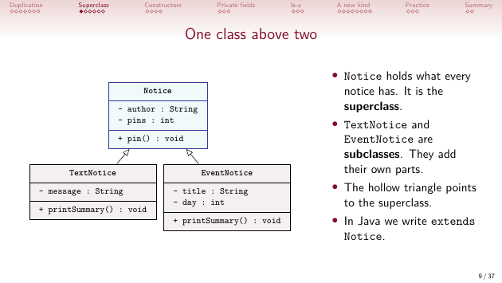
Constructors
- Constructors are not inherited. A subclass constructor calls
super(author);to set up the superclass part. super(...)must be the first statement. The superclass part is set up first, then the subclass part.- Without a
super(...)call, Java addssuper().Noticehas no constructor without parameters, so the code does not compile.
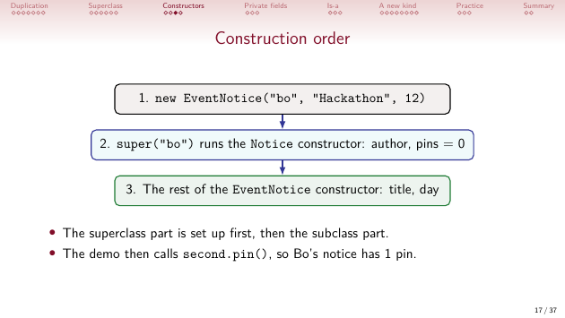
Private fields
- A private field of the superclass cannot be used by name in a subclass:
author has private access in Notice. - The subclass calls the inherited public getter,
getAuthor(), instead. The field stays private. - The shared code now has one copy, and the demo prints the same output as before.
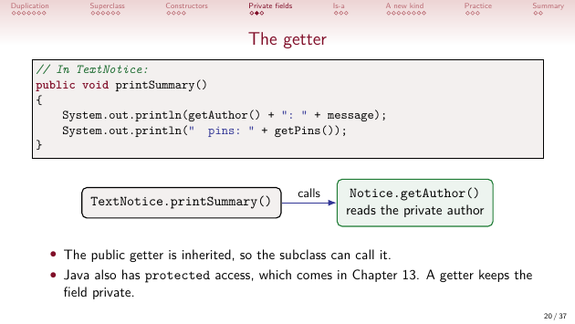
Is-a
- Use inheritance only when "Every X is a Y" is true. Every event notice is a notice; a notice board is not a notice.
- A board has notices, so it keeps them in fields. Has-a is a field, not
extends. - Classes joined by
extendsform an inheritance hierarchy. A class can extend only one class.
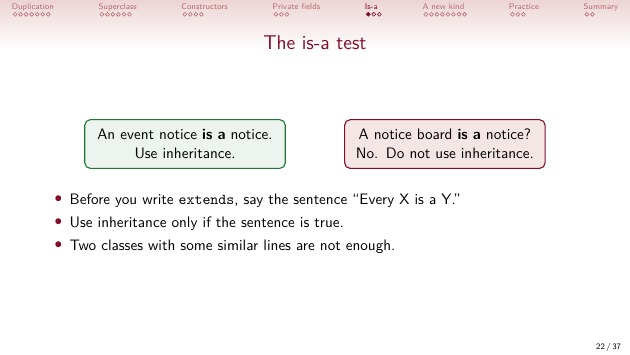
A new kind
JobNotice extends Noticeadds only the employer. It is 16 lines; without inheritance it would be 23.- The board still needs one list, one add method and one loop for each kind. Lecture 17 replaces them with one list.
Practice and programs
- The shelter moves
name,ageandadoptedintoAnimal.Dog,CatandRabbiteach callsuper(name, age)and usegetName()in their labels. Truck extends VehicleandStudentTicket extends Ticketfollow the same steps:extends,super(...)first, then getters for the superclass's fields.